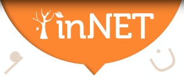

|
Latest News
Thursday, 06 September 2012
 We are delighted to announce the PhD seminar "Digital Humanities and the Study of the Web and Web Archives”, which is jointly organized by DIGHUMLAB and NetLab Denmark. It will take place from 3rd until 5th of December 2012 at the Hotel Vejleford in Denmark. We are delighted to announce the PhD seminar "Digital Humanities and the Study of the Web and Web Archives”, which is jointly organized by DIGHUMLAB and NetLab Denmark. It will take place from 3rd until 5th of December 2012 at the Hotel Vejleford in Denmark.
Today the Internet is the medium which holds the most multifaceted set of materials documenting contemporary social, cultural, and political life. It has become the fulcrum for the general development of media, including mass media and a growing variety of digital devices. If the communicative infrastructure of society in the late 20th century was centered on television, it is today centered on the Internet.
As a variety of digital media penetrates all spheres in society, they also play a still more dominant role for the social sciences, humanities and arts. They do so in three respects: as archives for contemporary life, as a toolbox for the study of all sorts of digital collections, including digitized collections of non-digital materials (often labeled cultural heritage), and as a means for enforced communication within all spheres of society.
This course will concentrate on the role of the Internet and particularly on online and archived web materials for scholars studying contemporary political, social, and cultural phenomena. The full programme can be found here: http://tinyurl.com/brn3qcj
Tuesday, 04 September 2012
Fondazione Rinascimento Digitale is delighted to announce the 3rd edition of the "CULTURAL HERITAGE on line- Trusted Digital Repositories & Trusted Professionals" Conference (http://www.rinascimento-digitale.it/conference2012) that will be held on 11-12 December 2012 in Florence, with a rich program of specialised events and tutorials. This year the focus is on the competences and skills necessary to manage trusted digital repositories. The Conference includes a call for contribution aimed at selecting concrete examples of trusted digital repository initiatives. Accepted contributions will be published in the Conference 2012 proceedings. Call for Poster 1: Trusted Digital Repository Projects Submissions are encouraged related to practical applications of trusted digital repository initiatives, including demonstrations of innovative systems and solutions. Contributors will prepare a poster, illustrating the initiative, and will present it in Session 6. Preference will be given to authors presenting collaborative approaches among projects in the business and industrial context. Call for Posters 2: Digital Curation Programs, Training And Education Educating and re-skilling a diverse workforce is of great importance, but current higher education programs and lifelong learning educational offerings in digital curation are not easy to be discovered and compared. Contributors will prepare a poster, illustrating all the educational programs in digital preservation and digital curation of certified and recognised quality. This poster session includes an exhibition in a dedicated area but doesn’t foresee a presentation.
 CENDARI is a research collaboration aimed at integrating digital archives and resources for research on medieval and modern European history. The project brings technical experts together with leading historians and existing infrastructures (archives, libraries and other digital projects) within a research programme that is informed by cutting-edge technical development and driven by active reflection on the impact of the digital age on scholarly practice. This is a 4-year, European Commission-funded project led by Trinity College Dublin, in partnership with 14 institutions across 7 countries, to facilitate access to archives and resources in Europe for the benefit of scholars everywhere. CENDARI is also running a short questionnaire about primary resources, interesting collections and valuable finding aids to help shape the future of technical support for historic research. Please take a few minutes to complete their questionnaire.
 We invite submissions on research which employ digital methods, resources or technologies in an innovative way in order to enable increased understanding of the ancient world at large. Abstracts, either in English or in German, of 300-500 words max. (bibliographic references excluded) should be uploaded by midnight MET on September 14, 2012 using the special submission form.
|
DIGHUMLAB (Digital Humanities Laboratory, Denmark) launches on Monday 10 September 2012. We invite all members of DARIAH, attendance is free but online registration is required as seats are limited. Details: Monday 10 September 2012: 12.00 – 17.30 Speakers include: - Rector Lauritz B. Holm-Nielsen & Dean of Arts, Mette Thunø, Aarhus University
- Danish Minister for Science, Innovation and Higher Education, Morten Østergaard
- The DIGHUMLAB research theme leaders
- Sally Chambers, Secretary General, DARIAH-EU Coordination Office
- Steven Krauwer, CLARIN ERIC Executive Director
- Professor Patrik Svensson, HUMlab, Umeå University
- Professor Lorna Hughes, University of Wales
- Associate Professor Palmyre Pierroux, InterMedia, University of Oslo
- Professor Lily Díaz-Kommonen, Media Lab, Aalto University
Highly detailed or “confidential” microdata from other countries are often not available for research purposes. Or, if they are available, researchers have to go through diverse national accreditation processes and self-finance their access. To enhance access across borders to official microdata for comparative research, Data without Boundaries gives you the unique opportunity to work with data from a number of European countries. This is a continuous call and there will be additional opportunities to apply. The next upcoming *deadline is 15th October 2012*. Additional deadline dates are 15th April and 15th October in 2013 and 2014.
The call is available as pdf (240 kB), instructions can be found on the website.
 Best practices in digital language archiving of language and music data
Presentations and panel : Thu 9.15 – 16.45, Fri 9.15 – 12.45 (Neues Seminargebäude) Business meetings: Thu 17.00 – 18.30, Fri 14.00 – 18.00 (Departmental seminar room)
 The NeDiMAH working groups "Digital Scholarly Editions" and "Using Large-Scale Text Collections for Research" are organising an expert meeting and a workshop (both on 21 November 2012) at the Huygens Institute for the History of the Netherlands, in The Hague, The Netherlands. Proposals are invited before 10th of September 2012. The NeDiMAH working groups "Digital Scholarly Editions" and "Using Large-Scale Text Collections for Research" are organising an expert meeting and a workshop (both on 21 November 2012) at the Huygens Institute for the History of the Netherlands, in The Hague, The Netherlands. Proposals are invited before 10th of September 2012.
1. EXPERT MEETING on Digital Scholarly Editions
The working group on Digital Scholarly Editions of the European Research Network NeDiMAH (Network for Digital Methods in the Arts and Humanities, http://www.nedimah.eu) is organising an Experts’ Seminar on Wednesday, 21 November 2012 at the Huygens Institute for the History of the Netherlands in The Hague. The seminar is being held in conjunction with the 9th conference of the European Society for Textual Scholarship, ‘Editing Fundamentals:
Historical and Literary Paradigms in Source Editing’, 22-24 November 2012 in Amsterdam (http://www.textualscholarship.eu/conference-2012.html).
The NeDiMAH working group on Digital Scholarly Editions seeks to promote the use of existing digital technologies in the production of scholarly editions, bringing together experts from a wide variety of disciplines and time-periods to establish the state of the art and recommend a set of best practices in order to ensure maximum interoperability and long-term preservation of, and access to, digital data. In particular, the topics
which will be addressed at the seminar are: • Theory: What is a digital edition? What is its purpose, and who are the intended users? What, in short, is the nature of the digital editorial endeavour? • Production: What are the various stages in the production of a digital edition?
Standards for digital imaging and basic text encoding are now fairly well established, but there remain several fundamental issues yet to be resolved, such as how one can best deal with documenting and representing textual variation and the basic question of editing the text as opposed to editing the document (i.e. the text in situ). To what extent are collaborative/distributed editions the way forward?
Proposals of not more than 500 words are invited by the 10th of September (to mjd at hum.ku.dk or elena.pierazzo at kcl.ac.uk). Please note that for this seminar we are particularly interested in methodological and theoretical contributions, rather than project reports. Speakers will be allotted 15 minutes for their presentations followed by 10 minutes of discussion. The seminar will close with a general round-table discussion.
|
|
|
|
|
|
Page 5 of 14 |
|
Information brochure

Download PDF 
|